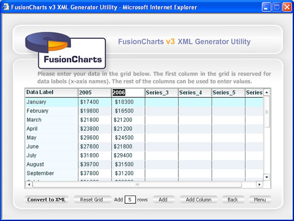
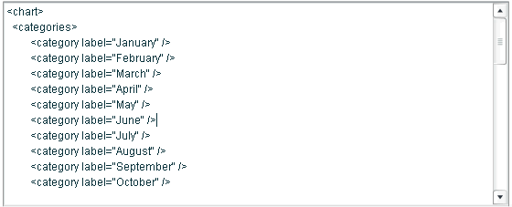
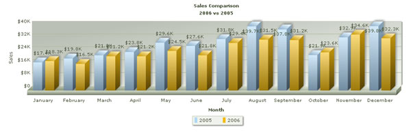

Creating Multi-series XML Data |
|||||||||||||||||||||||||||||||||||||||
In our previous examples, we were using single series XML Data, as we were plotting data for just 1 year. Let's now consider a case where we want to compare our sales data for 2006 against sales data for 2005. Our data table would look as under: |
|||||||||||||||||||||||||||||||||||||||
|
|||||||||||||||||||||||||||||||||||||||
| Building the XML Document | |||||||||||||||||||||||||||||||||||||||
To build the XML data document for this data, again launch our XML Generator Utility and choose option 1 "I want to manually enter data". Now, first enter the data series name in the grid (2005, 2006 etc.) by clicking on column header and changing it from Series_1 (or Series_2 ...) to our required value (2005, 2006). Thereafter enter the actual values as shown below: |
|||||||||||||||||||||||||||||||||||||||
|  | |||||||||||||||||||||||||||||||||||||||
| When you now click on "Convert to XML" button, you'll see that the utility has converted this data into multi-series XML data format as shown below: | |||||||||||||||||||||||||||||||||||||||
|  | |||||||||||||||||||||||||||||||||||||||
Again, configure the chart properties and save this data along with HTML, as explained before. When you now see the chart, you'll get the following results: |
|||||||||||||||||||||||||||||||||||||||
|  |